Primeira Unidade
1. Capítulo 2: Manipulando pixels em uma imagem
Clique para expandir os exercícios do Capítulo 2
=== Exercício 1: Efeito Negativo em Região Retangular
O objetivo é inverter os valores de intensidade dos pixels (gerar o efeito negativo) apenas em uma região retangular definida por dois pontos: \(P_1 = (x_1, y_1)\) e \(P_2 = (x_2, y_2)\).
#include <iostream>
#include <opencv2/opencv.hpp>
int main(int argc, char** argv) {
if (argc < 2) {
std::cout << "Uso: ./pixels <caminho_da_imagem>" << std::endl;
return -1;
}
cv::Mat image = cv::imread(argv[1], cv::IMREAD_GRAYSCALE);
if (image.empty()) {
std::cout << "Erro ao abrir a imagem!" << std::endl;
return -1;
}
int x1, y1, x2, y2;
std::cout << "Dimensões da imagem: " << image.cols << "x" << image.rows << std::endl;
std::cout << "Digite P1 (x y): ";
std::cin >> x1 >> y1;
std::cout << "Digite P2 (x y): ";
std::cin >> x2 >> y2;
int x_min = std::max(0, std::min(x1, x2));
int x_max = std::min(image.cols - 1, std::max(x1, x2));
int y_min = std::max(0, std::min(y1, y2));
int y_max = std::min(image.rows - 1, std::max(y1, y2));
for (int i = y_min; i <= y_max; i++) {
for (int j = x_min; j <= x_max; j++) {
image.at<uchar>(i, j) = 255 - image.at<uchar>(i, j);
}
}
cv::imwrite("resultado_negativo.png", image);
cv::imshow("Pixels - Região Negativa", image);
cv::waitKey(0);
return 0;
}
|
|
(a) Imagem original ( |
(b) Negativo aplicado na região selecionada ( |


=== Exercício 2: Troca de Quadrantes em Diagonal
O objetivo consiste em recortar uma imagem de entrada em quatro quadrantes de tamanhos iguais e trocá-los em diagonal através do uso de retângulos de interesse (cv::Rect) e cópia de matrizes (copyTo).
#include <iostream>
#include <opencv2/opencv.hpp>
int main(int argc, char** argv) {
if (argc < 2) {
std::cout << "Uso: ./trocaregioes <caminho_da_imagem>" << std::endl;
return -1;
}
cv::Mat image = cv::imread(argv[1], cv::IMREAD_GRAYSCALE);
if (image.empty()) {
std::cout << "Erro ao carregar a imagem." << std::endl;
return -1;
}
int half_width = image.cols / 2;
int half_height = image.rows / 2;
cv::Mat result = cv::Mat::zeros(image.size(), image.type());
// Submatrizes (ROIs)
cv::Mat qA(image, cv::Rect(0, 0, half_width, half_height));
cv::Mat qB(image, cv::Rect(half_width, 0, half_width, half_height));
cv::Mat qC(image, cv::Rect(0, half_height, half_width, half_height));
cv::Mat qD(image, cv::Rect(half_width, half_height, half_width, half_height));
// Troca diagonal
qA.copyTo(result(cv::Rect(half_width, half_height, half_width, half_height)));
qD.copyTo(result(cv::Rect(0, 0, half_width, half_height)));
qB.copyTo(result(cv::Rect(0, half_height, half_width, half_height)));
qC.copyTo(result(cv::Rect(half_width, 0, half_width, half_height)));
cv::imwrite("resultado_trocaregioes.png", result);
cv::imshow("Troca de Quadrantes", result);
cv::waitKey(0);
return 0;
}
|
|
(a) Imagem original ( |
(b) Imagem com os quadrantes permutados |

2. Capítulo 3: Tratando arquivos de vídeo
Clique para expandir os exercícios do Capítulo 3
=== Exercício 1: Conversão e Gravação de Vídeo em Tons de Cinza
O objetivo deste exercício é capturar um fluxo de vídeo a partir de um arquivo de entrada, converter cada quadro para a escala de cinza com cv::cvtColor e salvá-lo em um novo arquivo no formato .mp4. O parâmetro isColor do construtor cv::VideoWriter é configurado como false para indicar a gravação de imagens monocromáticas de apenas 1 canal.
#ifndef _REENTRANT
#define _REENTRANT
#endif
#include <mutex>
#include <iostream>
#include <opencv2/opencv.hpp>
int main(int argc, char** argv) {
if (argc < 2) {
std::cout << "Uso: ./videocinza <caminho_do_video>" << std::endl;
return -1;
}
cv::VideoCapture cap(argv[1]);
if (!cap.isOpened()) {
std::cout << "Erro ao abrir o vídeo!" << std::endl;
return -1;
}
double width = cap.get(cv::CAP_PROP_FRAME_WIDTH);
double height = cap.get(cv::CAP_PROP_FRAME_HEIGHT);
double fps = cap.get(cv::CAP_PROP_FPS);
if (fps <= 0) fps = 30.0;
cv::Size frameSize(static_cast<int>(width), static_cast<int>(height));
int fourcc = cv::VideoWriter::fourcc('m', 'p', '4', 'v');
cv::VideoWriter out("output_cinza.mp4", fourcc, fps, frameSize, false);
if (!out.isOpened()) {
std::cout << "Erro ao criar o arquivo de saída de vídeo!" << std::endl;
return -1;
}
cv::namedWindow("Vídeo em Tons de Cinza", cv::WINDOW_AUTOSIZE);
cv::Mat frame, frame_gray;
int counter = 0;
while (cap.read(frame)) {
if (frame.empty()) break;
cv::cvtColor(frame, frame_gray, cv::COLOR_BGR2GRAY);
out << frame_gray;
cv::imshow("Vídeo em Tons de Cinza", frame_gray);
counter++;
char key = static_cast<char>(cv::waitKey(30));
if (key == 27) break;
}
cap.release();
out.release();
cv::destroyAllWindows();
return 0;
}=== Exercício 2: Gravação de Vídeo com Efeito Negativo
Modificar o processamento para aplicar a inversão de intensidade (bitwise_not) em cada canal do quadro antes de gravá-lo no arquivo de saída .mp4. Como a imagem mantém os 3 canais de cor (BGR), o parâmetro isColor do cv::VideoWriter é mantido como true.
#ifndef _REENTRANT
#define _REENTRANT
#endif
#include <mutex>
#include <iostream>
#include <opencv2/opencv.hpp>
int main(int argc, char** argv) {
if (argc < 2) {
std::cout << "Uso: ./videonegativo <caminho_do_video>" << std::endl;
return -1;
}
cv::VideoCapture cap(argv[1]);
if (!cap.isOpened()) {
std::cout << "Erro ao abrir o vídeo!" << std::endl;
return -1;
}
double width = cap.get(cv::CAP_PROP_FRAME_WIDTH);
double height = cap.get(cv::CAP_PROP_FRAME_HEIGHT);
double fps = cap.get(cv::CAP_PROP_FPS);
if (fps <= 0) fps = 30.0;
cv::Size frameSize(static_cast<int>(width), static_cast<int>(height));
int fourcc = cv::VideoWriter::fourcc('m', 'p', '4', 'v');
cv::VideoWriter out("output_negativo.mp4", fourcc, fps, frameSize, true);
if (!out.isOpened()) {
std::cout << "Erro ao criar o arquivo de saída de vídeo!" << std::endl;
return -1;
}
cv::namedWindow("Vídeo Negativo", cv::WINDOW_AUTOSIZE);
cv::Mat frame, frame_neg;
int counter = 0;
while (cap.read(frame)) {
if (frame.empty()) break;
cv::bitwise_not(frame, frame_neg);
out << frame_neg;
cv::imshow("Vídeo Negativo", frame_neg);
counter++;
char key = static_cast<char>(cv::waitKey(30));
if (key == 27) break;
}
cap.release();
out.release();
cv::destroyAllWindows();
return 0;
}3. Capítulo 4: Visualização de imagens
Clique para expandir os exercícios do Capítulo 4
=== Exercício 1: Geração de Dados para Perfil de Iluminação em 3D
O objetivo deste exercício é extrair a matriz de intensidades de luminância e um perfil de linha horizontal de imagens de entrada (sementes1.png e sementes2.png) utilizando o programa visualizacao.cpp.
Os arquivos de saída gerados (matriz.txt e line.txt) são posteriormente processados pelo programa Gnuplot para gerar renderizações tridimensionais (mapas de superfície/iluminação) e gráficos de perfil de linha em 2D.
visualizacao.cpp)#include <iostream>
#include <fstream>
#include <opencv2/opencv.hpp>
int main(int argc, char** argv) {
if (argc < 2) {
std::cout << "Uso: ./visualizacao <caminho_da_imagem>" << std::endl;
return -1;
}
cv::Mat image = cv::imread(argv[1], cv::IMREAD_GRAYSCALE);
if (image.empty()) {
std::cout << "Erro ao carregar a imagem!" << std::endl;
return -1;
}
std::ofstream fmatriz("matriz.txt");
std::ofstream fline("line.txt");
if (!fmatriz.is_open() || !fline.is_open()) {
std::cout << "Erro ao criar os arquivos de saída!" << std::endl;
return -1;
}
int mid_row = image.rows / 2;
for (int i = 0; i < image.rows; i++) {
for (int j = 0; j < image.cols; j++) {
int val = static_cast<int>(image.at<uchar>(i, j));
fmatriz << val << (j == image.cols - 1 ? "" : " ");
if (i == mid_row) {
fline << j << " " << val << "\n";
}
}
fmatriz << "\n";
}
fmatriz.close();
fline.close();
std::cout << "Arquivos matriz.txt e line.txt gerados com sucesso para " << argv[1] << std::endl;
return 0;
}Para a renderização dos gráficos, utilize os seguintes scripts no terminal do Gnuplot:
-
Gerar Superfície 3D (
plot3d.gp):
set title "Perfil 3D de Intensidades Luminosas" set xlabel "Colunas (X)" set ylabel "Linhas (Y)" set zlabel "Intensidade" set hidden3d set dgrid3d 100,100 splot 'matriz.txt' matrix with lines
-
Gerar Perfil 2D da Linha Central (
plot2d.gp):
set title "Perfil de Linha Central" set xlabel "Coluna (X)" set ylabel "Intensidade" plot 'line.txt' with lines title "Linha Central"
|
|
(a) Imagem |
(b) Imagem |


|
|
(c) Superfície 3D de |
(d) Superfície 3D de |


|
|
(e) Perfil de linha central de |
(f) Perfil de linha central de |


A comparação entre as superfícies 3D e os perfis de linha em 2D revela detalhes fundamentais sobre a distribuição de intensidade e os artefatos de iluminação em cada cena:
-
Análise de
sementes1.png:-
Comportamento do Fundo: O plano de fundo é predominantemente claro e uniforme, mantendo um nível de luminância elevado em torno de 190 a 200 ao longo de toda a extensão da imagem.
-
Perfil das Sementes: Como as sementes são objetos escuros sobre fundo claro, elas são representadas nos gráficos por vales/poços de intensidade bem definidos, onde a luminância cai abruptamente para valores próximos de 40 a 50.
-
Perfil 2D (
plot2d_sementes1.png): A linha de base do fundo permanece praticamente horizontal e plana (alta frequência nos vales das sementes sobre uma componente contínua de fundo estável), o que demonstra que a cena possui iluminação frontal homogênea.
-
-
Análise de
sementes2.png:-
Efeito de Vinheta (Vignetting) e Iluminação Não Uniforme: A superfície 3D e o perfil de linha 2D revelam uma acentuada curvatura parabólica no nível de fundo. A intensidade do background atinge seu ponto máximo no centro da imagem (~150) e cai progressivamente em direção às bordas (~100), caracterizando uma iluminação centralizada ou atenuação periférica de lente (vinhetagem).
-
Perfil das Sementes: As sementes continuam aparecendo como vales de menor intensidade (descendo até ~20–30), porém o nível absoluto de seus mínimos varia conforme a posição horizontal na cena devido ao gradiente do fundo.
-
Impacto no Processamento: No perfil 2D (
plot2d_sementes2.png), fica claro que a escolha de um único limiar global (por exemplo, limiar fixo em 120) falharia na binarização: ele cortaria o fundo nas extremidades da imagem e confundiria o background escuro com as sementes. Essa cena exige técnicas de correção de iluminação (subtração de fundo/estimador de iluminação) ou limiarização adaptativa local.
-
4. Capítulo 5: Serialização de dados em ponto flutuante via FileStorage
Clique para expandir os exercícios do Capítulo 5
=== Exercício 1: Geração, Serialização e Comparação de Senóide 2D (YML vs PNG)
O objetivo deste exercício é gerar uma imagem sintética de dimensões 256x256 pixels contendo uma senoide horizontal de 4 períodos e amplitude 127 (deslocada por um offset de 127 para que a faixa teórica ocupe de 0 a 254).
A matriz com valores em ponto flutuante (CV_32F) é gravada em disco no formato YML (utilizando a classe cv::FileStorage) e convertida/salva no formato PNG (imagem de 8 bits por canal, CV_8U). Em seguida, ambas as imagens são recarregadas para extrair uma mesma linha horizontal, calculando a diferença absoluta ponto a ponto e gerando um gráfico com o Gnuplot.
senoide.cpp)#include <iostream>
#include <fstream>
#include <cmath>
#include <opencv2/opencv.hpp>
int main() {
int width = 256;
int height = 256;
int periodos = 4;
float amplitude = 127.0f;
float offset = 127.0f;
cv::Mat image(height, width, CV_32FC1);
// Geração da senoide horizontal
for (int j = 0; j < width; j++) {
float val = offset + amplitude * std::sin(2.0f * M_PI * periodos * j / width);
for (int i = 0; i < height; i++) {
image.at<float>(i, j) = val;
}
}
// 1. Gravação em formato YML (Ponto Flutuante)
cv::FileStorage fs("senoide.yml", cv::FileStorage::WRITE);
fs << "mat" << image;
fs.release();
// 2. Normalização e Gravação em formato PNG (8 bits inteiros)
cv::Mat image8u;
image.convertTo(image8u, CV_8U);
cv::imwrite("senoide.png", image8u);
// --- Leitura e Comparação ---
cv::Mat img_yml;
cv::FileStorage fs_read("senoide.yml", cv::FileStorage::READ);
fs_read["mat"] >> img_yml;
fs_read.release();
cv::Mat img_png = cv::imread("senoide.png", cv::IMREAD_GRAYSCALE);
int mid_row = height / 2;
std::ofstream fdiff("diferenca_linha.txt");
for (int j = 0; j < width; j++) {
float val_yml = img_yml.at<float>(mid_row, j);
float val_png = static_cast<float>(img_png.at<uchar>(mid_row, j));
float diff = std::abs(val_yml - val_png);
fdiff << j << " " << val_yml << " " << val_png << " " << diff << "\n";
}
fdiff.close();
std::cout << "Processamento concluído. Arquivo diferenca_linha.txt gerado com sucesso!" << std::endl;
return 0;
}plot_diff.gp)set title "Diferença do Perfil de Linha: YML (32F) vs PNG (8U)"
set xlabel "Coluna (X)"
set ylabel "Diferença Absoluta |YML - PNG|"
set grid
set yrange [0:1]
plot 'diferenca_linha.txt' using 1:4 with lines title "Erro de Quantização"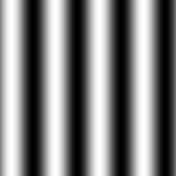 |
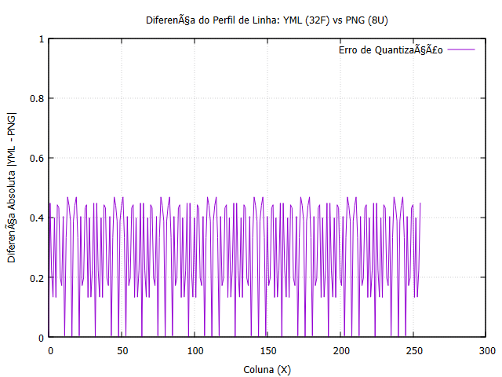 |
(a) Imagem visual da senoide gerada ( |
(b) Erro de quantização ao longo da linha central ( |
-
O que é observado:
-
O gráfico da diferença oscila periodicamente entre 0.0 e no máximo 0.5 unidades de intensidade ao longo de cada período da senoide.
-
O arquivo YML retém os valores contínuos exatos como números de ponto flutuante (
float), enquanto o PNG trunca e arredonda esses valores para números inteiros sem sinal de 8 bits (intervalo de 0 a 255).
-
-
Por que isso acontece?
-
Truncamento de Quantização: A conversão de
CV_32FparaCV_8Udiscretiza a função contínua seno em níveis inteiros discretos. O erro possui um valor máximo teórico de exatamente 0.5. -
Precisão Numérica vs Formato de Armazenamento: Imagens em formato PNG convencional não foram projetadas para armazenar matrizes de dados numéricos científicos de ponto flutuante sem perda. Para preservar a precisão completa de processamento (como transformadas de Fourier, mapas de profundidade e derivadas de imagem), utiliza-se a serialização de dados como YML/XML/JSON (
cv::FileStorage) ou formatos de imagem HDR/ponto flutuante de alta profundidade.
-
5. Capítulo 6: Colorizando imagens cinzentas com mapas de cores
Clique para expandir os exercícios do Capítulo 6
=== Exercício 1: Aplicação de Colormaps Pré-definidos e Implementação de Colormap Personalizado
O objetivo deste capítulo é explorar a pseudo-colorização de imagens em escala de cinza utilizando a função cv::applyColorMap() do OpenCV. Inicialmente, a imagem de teste biel.png é processada com 5 mapas de cores pré-definidos do OpenCV (COLORMAP_JET, COLORMAP_HOT, COLORMAP_OCEAN, COLORMAP_SUMMER e COLORMAP_VIRIDIS).
Em seguida, demonstra-se a criação de um colormap personalizado aplicando uma Look-Up Table (LUT) customizada de 256 elementos (3 canais BGR) que mapeia a escala de cinza $[0, 255]$ para um gradiente de cores exclusivo (do azul escuro passando pelo ciano/amarelo até o vermelho).
colormaps_ex.cpp)#include <iostream>
#include <opencv2/opencv.hpp>
int main(int argc, char** argv) {
cv::Mat gray = cv::imread("biel.png", cv::IMREAD_GRAYSCALE);
if (gray.empty()) {
std::cout << "Erro ao carregar a imagem biel.png!" << std::endl;
return -1;
}
// 1. Aplicação de 5 Colormaps Pré-definidos
cv::Mat cm_jet, cm_hot, cm_ocean, cm_summer, cm_viridis;
cv::applyColorMap(gray, cm_jet, cv::COLORMAP_JET);
cv::applyColorMap(gray, cm_hot, cv::COLORMAP_HOT);
cv::applyColorMap(gray, cm_ocean, cv::COLORMAP_OCEAN);
cv::applyColorMap(gray, cm_summer, cv::COLORMAP_SUMMER);
cv::applyColorMap(gray, cm_viridis, cv::COLORMAP_VIRIDIS);
cv::imwrite("biel_jet.png", cm_jet);
cv::imwrite("biel_hot.png", cm_hot);
cv::imwrite("biel_ocean.png", cm_ocean);
cv::imwrite("biel_summer.png", cm_summer);
cv::imwrite("biel_viridis.png", cm_viridis);
// 2. Criação de Colormap Personalizado via Look-Up Table (LUT)
// Criamos uma matriz 1x256 do tipo CV_8UC3
cv::Mat custom_lut(1, 256, CV_8UC3);
for (int i = 0; i < 256; i++) {
// Mapeamento de cor customizado BGR em função da intensidade i (0-255)
uchar b = cv::saturate_cast<uchar>(i< 128 ? i * 2 : 255 + (i - 128) * 2); // Azul
uchar g = cv::saturate_cast<uchar>(i< 128 ? i * 2 : 50 + (i - 128) * 2); // Verde
uchar r = cv::saturate_cast<uchar>(i); // Vermelho
custom_lut.at<cv::Vec3b>(0, i) = cv::Vec3b(b, g, r);
}
cv::Mat cm_custom;
cv::applyColorMap(gray, cm_custom, custom_lut);
cv::imwrite("biel_custom.png", cm_custom);
std::cout << "Todos os colormaps foram gerados e salvos com sucesso!" << std::endl;
return 0;
}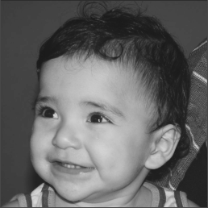 |
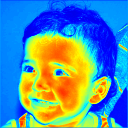 |
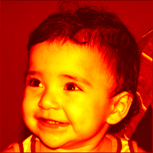 |
(a) Original ( |
(b) |
(c) |
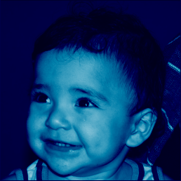 |
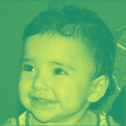 |
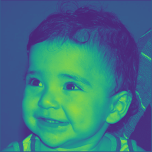 |
(d) |
(e) |
(f) |
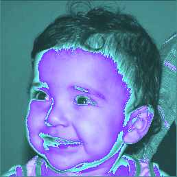 |
|
(g) Imagem Original em Escala de Cinza |
(h) Colormap Personalizado (LUT BGR) |
-
Importância da Pseudo-colorização:
-
O sistema visual humano possui capacidade limitada para discernir tons de cinza (aproximadamente 30 a 50 níveis perceptíveis), mas consegue diferenciar milhares de nuances de cores. A conversão de intensidade de cinza em falsa cor destaca detalhes sutis em exames médicos, mapas térmicos e imagens de sensoriamento remoto.
-
-
Funcionamento da LUT Personalizada:
-
Conforme documentado no OpenCV, a função
cv::applyColorMap()pode receber como segundo parâmetro tanto uma flag inteira referente a uma paleta pré-definida quanto uma matriz Look-Up Table de dimensão 256x1 do tipoCV_8UC3. -
No exemplo desenvolvido, a tabela calcula os canais BGR de forma segmentada para o intervalo de intensidade i de 0 a 255:
-
Canal Azul (B): Para tons escuros (i < 128), cresce linearmente de 0 a 254 (2 * i). Para tons claros (i >= 128), sofre um salto somando um offset e continua a crescer saturando em 255 através de
cv::saturate_cast. -
Canal Verde (G): Nos tons escuros cresce linearmente de 0 a 254 (2 * i), e nos tons claros reinicia a partir de um nível base de 50 somando 2 * (i - 128), mantendo uma contribuição média/alta nas regiões de maior intensidade.
-
Canal Vermelho ®: Acompanha diretamente a intensidade original i de 0 a 255.
-
-
Essa combinação resulta num gradiente contínuo onde as regiões de baixa intensidade transitam de tons escuros para nuances de ciano e azul, enquanto as altas luzes ganham componentes mistas saturadas de vermelho, verde e azul, destacando o contraste dos elementos da imagem
biel.png.
-
6. Capítulo 7: Espaços de cor e mapas de cores
Clique para expandir os exercícios do Capítulo 7
=== Exercício 1: Decomposição de Espaços de Cor, Colormaps do OpenCV e Colormap Personalizado
Este exercício toma como referência o programa da Listagem 22 (colorspace.cpp) para explorar a representação de imagens nos espaços de cor BGR e HSV utilizando a imagem colorida de frutas (frutas.png).
Além da decomposição em canais individuais, o programa realiza a conversão da imagem para escala de cinza e aplica 5 mapas de cores (colormaps) pré-definidos do OpenCV (COLORMAP_AUTUMN, COLORMAP_BONE, COLORMAP_COOL, COLORMAP_SPRING e COLORMAP_PLASMA). Por fim, é desenvolvida uma Look-Up Table (LUT) de dimensão 256 X 1 de 3 canais (CV_8UC3) para implementar um colormap personalizado com gradiente térmico adaptado.
colorspace.cpp)#include <iostream>
#include <opencv2/opencv.hpp>
#include <vector>
int main(int argc, char** argv) {
std::string filename = (argc > 1) ? argv[1] : "../frutas.png";
cv::Mat image = cv::imread(filename, cv::IMREAD_COLOR);
if (image.empty()) {
std::cerr << "Erro ao abrir a imagem: " << filename << std::endl;
return -1;
}
// 1. Decomposição nos canais BGR e HSV
std::vector<cv::Mat> planes;
cv::Mat rgb_planes, hsv_planes, hsv_image;
cv::split(image, planes);
cv::hconcat(planes[0], planes[1], rgb_planes);
cv::hconcat(rgb_planes, planes[2], rgb_planes);
cv::imwrite("frutas_bgr_planes.png", rgb_planes);
cv::cvtColor(image, hsv_image, cv::COLOR_BGR2HSV_FULL);
cv::split(hsv_image, planes);
cv::hconcat(planes[0], planes[1], hsv_planes);
cv::hconcat(hsv_planes, planes[2], hsv_planes);
cv::imwrite("frutas_hsv_planes.png", hsv_planes);
// 2. Conversão para escala de cinza para aplicação dos colormaps
cv::Mat gray;
cv::cvtColor(image, gray, cv::COLOR_BGR2GRAY);
// 3. Aplicação de 5 Colormaps Pré-definidos
cv::Mat cm_autumn, cm_bone, cm_cool, cm_spring, cm_plasma;
cv::applyColorMap(gray, cm_autumn, cv::COLORMAP_AUTUMN);
cv::applyColorMap(gray, cm_bone, cv::COLORMAP_BONE);
cv::applyColorMap(gray, cm_cool, cv::COLORMAP_COOL);
cv::applyColorMap(gray, cm_spring, cv::COLORMAP_SPRING);
cv::applyColorMap(gray, cm_plasma, cv::COLORMAP_PLASMA);
cv::imwrite("frutas_autumn.png", cm_autumn);
cv::imwrite("frutas_bone.png", cm_bone);
cv::imwrite("frutas_cool.png", cm_cool);
cv::imwrite("frutas_spring.png", cm_spring);
cv::imwrite("frutas_plasma.png", cm_plasma);
// 4. Criação de Colormap Personalizado via Look-Up Table (LUT)
cv::Mat custom_lut(256, 1, CV_8UC3);
for (int i = 0; i < 256; i++) {
uchar b = cv::saturate_cast<uchar>(255 - i);
uchar g = cv::saturate_cast<uchar>(i < 128 ? i * 2 : 255 - (i - 128) * 2);
uchar r = cv::saturate_cast<uchar>(i);
custom_lut.at<cv::Vec3b>(i, 0) = cv::Vec3b(b, g, r);
}
cv::Mat cm_custom;
cv::applyColorMap(gray, cm_custom, custom_lut);
cv::imwrite("frutas_custom.png", cm_custom);
std::cout << "Sucesso! Imagens geradas." << std::endl;
return 0;
}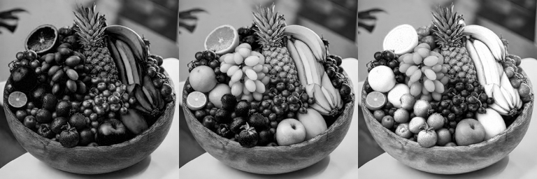 |
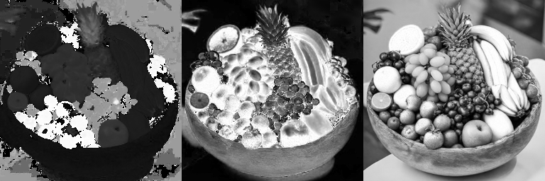 |
(a) Canais BGR (Azul | Verde | Vermelho) |
(b) Canais HSV (Matiz | Saturação | Valor) |
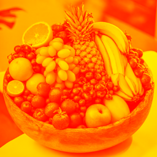 |
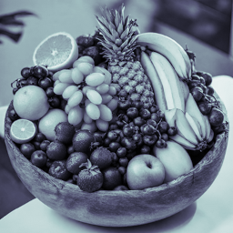 |
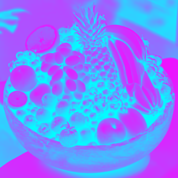 |
(c) |
(d) |
(e) |
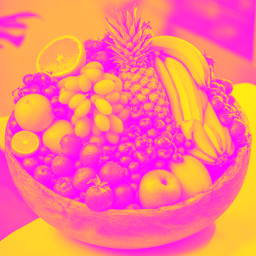 |
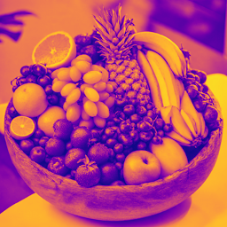 |
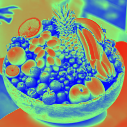 |
(f) |
(g) |
(h) Colormap Personalizado (LUT BGR) |
-
Decomposição BGR vs. HSV:
-
A separação dos canais BGR mostra a contribuição luminosa direta de cada cor primária. No espaço HSV, o canal H (Hue) codifica o tom puro da cor das frutas (como o vermelho dos morangos e o amarelo/verde das uvas e bananas), independente da iluminação, enquanto S (Saturation) e V (Value) isolam a vivacidade e o brilho.
-
-
Funcionamento dos Colormaps e da LUT Customizada:
-
A função
cv::applyColorMap()mapeia valores de intensidade de 0 a 255 para uma paleta tricolor BGR. -
A LUT customizada de dimensão 256 X 1 do tipo
CV_8UC3constrói um gradiente contínuo:-
Azul (B = 255 - i): Predomina nas regiões de sombra e tons baixos.
-
Verde (G): Possui curva triangular com pico central em i = 128, destacando tons médios.
-
Vermelho (R = i): Cresce linearmente até atingir o máximo nos pontos de alta luminância.
-
-
Essa distribuição transiciona suavemente do azul frio (sombras) ao vermelho/amarelo quente (brilhos), aumentando o contraste percebido na cena das frutas.
-
7. Capítulo 8: Seleção de cores e segmentação interativa
Clique para expandir os exercícios do Capítulo 8
=== Exercício 1: Seleção Interativa de Pixels por Pintura com o Rato
O objetivo deste exercício é estender a funcionalidade do programa colorrange.cpp, substituindo a seleção por caixa delimitadora (cv::Rect) por uma pintura interativa.
Nesta abordagem, o utilizador pode desenhar diretamente sobre a imagem para indicar quais pixels devem fazer parte da amostragem de cor: * Botão Esquerdo do Rato: Adiciona pixels à área de amostragem (pinta a região). * Botão Direito do Rato: Remove pixels da área de amostragem (apaga a região).
À medida que a seleção é alterada, o programa recalcula em tempo real a média (mean) e o desvio padrão (stddev) dos canais BGR para os pixels selecionados. Em seguida, os limites da função cv::inRange() e as trackbars de tolerância são atualizados dinamicamente, permitindo segmentar regiões com geometrias e tonalidades complexas.
paint_colorrange.cpp)#include <iostream>
#include <opencv2/opencv.hpp>
cv::Mat image, display_img, selection_mask, mask;
bool drawing = false;
int brush_type = 0; // 1: adicionar (botão esquerdo), -1: remover (botão direito)
int brush_size = 8;
cv::Scalar average(128, 128, 128);
cv::Scalar stdev(0, 0, 0);
int rangeR = 0;
int rangeG = 0;
int rangeB = 0;
void update_segmentation() {
if (cv::countNonZero(selection_mask) > 0) {
cv::meanStdDev(image, average, stdev, selection_mask);
rangeB = cv::saturate_cast<int>(3 * stdev[0]);
rangeG = cv::saturate_cast<int>(3 * stdev[1]);
rangeR = cv::saturate_cast<int>(3 * stdev[2]);
cv::setTrackbarPos("R-range", "Image", rangeR);
cv::setTrackbarPos("G-range", "Image", rangeG);
cv::setTrackbarPos("B-range", "Image", rangeB);
}
cv::Scalar lower_bound(
std::max(0.0, average[0] - rangeB),
std::max(0.0, average[1] - rangeG),
std::max(0.0, average[2] - rangeR));
cv::Scalar upper_bound(
std::min(255.0, average[0] + rangeB),
std::min(255.0, average[1] + rangeG),
std::min(255.0, average[2] + rangeR));
cv::inRange(image, lower_bound, upper_bound, mask);
}
void on_trackbar_R(int value, void*) { rangeR = value; update_segmentation(); }
void on_trackbar_G(int value, void*) { rangeG = value; update_segmentation(); }
void on_trackbar_B(int value, void*) { rangeB = value; update_segmentation(); }
static void onMouse(int event, int x, int y, int flags, void*) {
if (event == cv::EVENT_LBUTTONDOWN) {
drawing = true;
brush_type = 1;
} else if (event == cv::EVENT_RBUTTONDOWN) {
drawing = true;
brush_type = -1;
} else if (event == cv::EVENT_LBUTTONUP || event == cv::EVENT_RBUTTONUP) {
drawing = false;
brush_type = 0;
}
if (drawing) {
uchar color = (brush_type == 1) ? 255 : 0;
cv::circle(selection_mask, cv::Point(x, y), brush_size, cv::Scalar(color), -1);
update_segmentation();
}
}
int main(int argc, const char** argv) {
std::string filename = (argc > 1) ? argv[1] : "../PlayStation_Move.png";
image = cv::imread(filename, cv::IMREAD_COLOR);
if (image.empty()) {
std::cerr << "Erro ao abrir a imagem: " << filename << std::endl;
return -1;
}
selection_mask = cv::Mat::zeros(image.size(), CV_8UC1);
mask = cv::Mat::zeros(image.size(), CV_8UC1);
cv::namedWindow("Image", cv::WINDOW_AUTOSIZE);
cv::namedWindow("Pintura da Selecao", cv::WINDOW_AUTOSIZE);
cv::namedWindow("Segmentacao (inRange)", cv::WINDOW_AUTOSIZE);
cv::createTrackbar("R-range", "Image", &rangeR, 255, on_trackbar_R);
cv::createTrackbar("G-range", "Image", &rangeG, 255, on_trackbar_G);
cv::createTrackbar("B-range", "Image", &rangeB, 255, on_trackbar_B);
cv::setMouseCallback("Image", onMouse, nullptr);
for (;;) {
image.copyTo(display_img);
cv::Mat overlay;
image.copyTo(overlay);
overlay.setTo(cv::Scalar(255, 128, 0), selection_mask);
cv::addWeighted(overlay, 0.5, display_img, 0.5, 0, display_img);
cv::imshow("Image", display_img);
cv::imshow("Pintura da Selecao", selection_mask);
cv::imshow("Segmentacao (inRange)", mask);
char c = (char)cv::waitKey(20);
if (c == 27) break;
if (c == 'c' || c == 'C') {
selection_mask = cv::Mat::zeros(image.size(), CV_8UC1);
average = cv::Scalar(128, 128, 128);
stdev = cv::Scalar(0, 0, 0);
rangeR = rangeG = rangeB = 0;
cv::setTrackbarPos("R-range", "Image", 0);
cv::setTrackbarPos("G-range", "Image", 0);
cv::setTrackbarPos("B-range", "Image", 0);
mask = cv::Mat::zeros(image.size(), CV_8UC1);
}
}
cv::imwrite("PlayStation_Move_pintura_selecao.png", selection_mask);
cv::imwrite("PlayStation_Move_segmentada.png", mask);
return 0;
}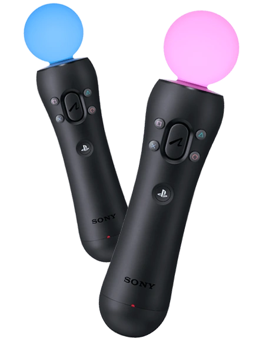 |
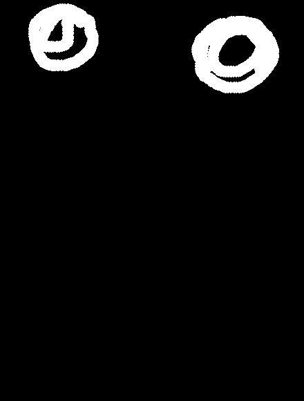 |
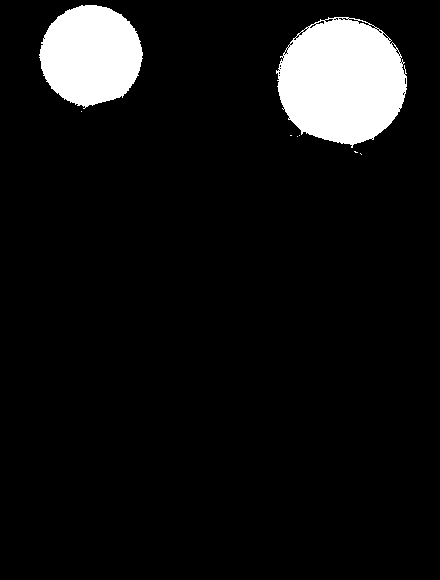 |
(a) Imagem Original ( |
(b) Pintura da Seleção (Amostragem) |
(c) Segmentação em Tempo Real ( |
-
Flexibilidade da Pintura Interativa:
-
O método de seleção retangular original limita a amostragem a regiões geométricas simples. A pintura livre permite isolar objetos não convexos ou distribuídos em múltiplos pontos da imagem com contornos arbitrários.
-
-
Cálculo da Amostragem com Máscara:
-
A utilização do overload
cv::meanStdDev(image, average, stdev, selection_mask)assegura que apenas os pixels pintados contribuam para as estatísticas dos canais BGR.
-
-
Controlo da Tolerância:
-
A definição automática do intervalo como 3 X \(sigma\) captura aproximadamente 99,7% das variações de cor dentro da amostra. O utilizador pode ajustar manualmente as trackbars ou utilizar o botão direito do rato para apagar pontos com reflexos de iluminação que ampliem excessivamente o desvio padrão.
-
8. Capítulo 9: Combinação de imagens
Clique para expandir os exercícios do Capítulo 9
=== Exercício 1: Efeito Light Painting a partir de Sequência de Vídeo
O objetivo deste exercício é aplicar técnicas de combinação de imagens para recriar o efeito fotográfico de light painting utilizando uma sequência de quadros extraída de um vídeo. A técnica consiste em acumular os pontos de maior luminância ao longo da sequência temporal, destacando trajetórias luminosas num ambiente escuro.
Para o processamento, é utilizado o ficheiro de vídeo teste_light_painting.mp4. À medida que os quadros são lidos iterativamente utilizando a classe cv::VideoCapture, duas operações do Capítulo 9 são aplicadas de forma acumulativa:
* Combinação por Máximo (cv::max): Compara cada pixel do acumulador com o quadro atual e preserva o valor de maior intensidade. Mantém os traços de luz bem definidos sem saturar o fundo.
* Operação Lógica OU (cv::bitwise_or): Realiza a combinação binária bit a bit dos pixels do acumulador e do quadro atual, realçando rapidamente qualquer pixel que se acenda ao longo do tempo.
light_painting.cpp)#include <iostream>
#include <opencv2/opencv.hpp>
int main(int argc, char** argv) {
// Abre o arquivo de vídeo informado ou utiliza o padrao
std::string video_path = (argc > 1) ? argv[1] : "teste_light_painting.mp4";
cv::VideoCapture cap(video_path);
if (!cap.isOpened()) {
std::cerr << "Erro ao abrir o arquivo de video: " << video_path << std::endl;
return -1;
}
cv::Mat frame, frame_gray;
cap >> frame;
if (frame.empty()) {
std::cerr << "O video nao contem frames validos." << std::endl;
return -1;
}
// Converte o primeiro frame para tons de cinza para servir de base
cv::cvtColor(frame, frame_gray, cv::COLOR_BGR2GRAY);
// Inicializa os acumuladores para cada metodo de combinacao
cv::Mat light_painting_max = frame_gray.clone();
cv::Mat light_painting_or = frame_gray.clone();
while (true) {
cap >> frame;
if (frame.empty()) {
break; // Fim da leitura do video
}
// Converte o frame atual para tons de cinza
cv::cvtColor(frame, frame_gray, cv::COLOR_BGR2GRAY);
// Combinacao 1: cv::max (Retem a maior intensidade de pixel)
cv::max(light_painting_max, frame_gray, light_painting_max);
// Combinacao 2: cv::bitwise_or (Operacao logica OU bit a bit)
cv::bitwise_or(light_painting_or, frame_gray, light_painting_or);
}
// Exibe as janelas com os resultados finais
cv::imshow("Light Painting - cv::max", light_painting_max);
cv::imshow("Light Painting - cv::bitwise_or", light_painting_or);
// Salva os resultados em arquivo de imagem
cv::imwrite("resultado_light_painting_max.png", light_painting_max);
cv::imwrite("resultado_light_painting_or.png", light_painting_or);
std::cout << "Processamento concluido! Imagens salvas com sucesso." << std::endl;
cv::waitKey(0);
return 0;
}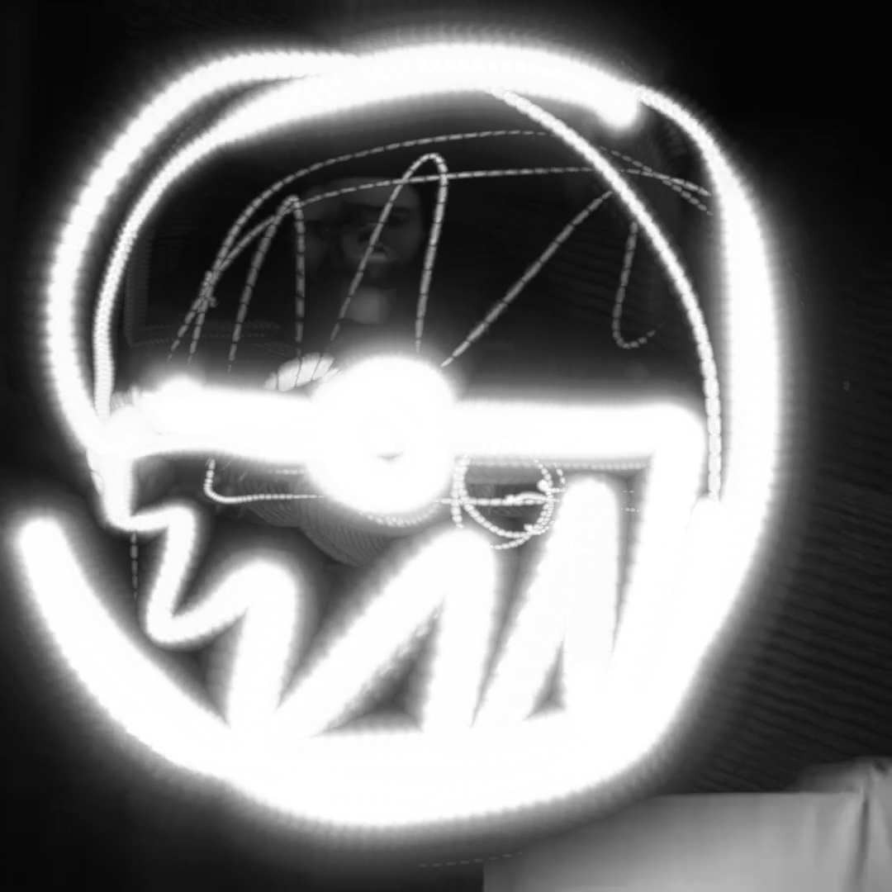 |
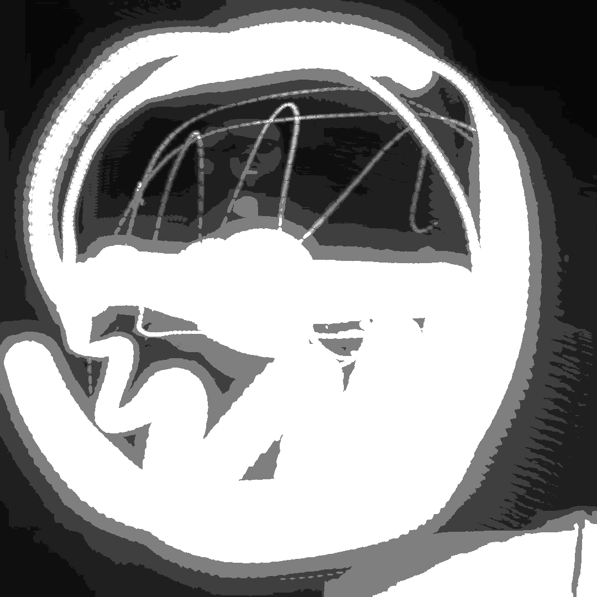 |
(a) Resultado da combinação via |
(b) Resultado da combinação via |
-
Diferenças entre
cv::maxecv::bitwise_or:-
A função
cv::maxopera diretamente nos valores numéricos dos níveis de cinza (0–255), garantindo que as gradações de iluminação e contornos da luz fiquem suaves e contínuos. -
A operação
cv::bitwise_oratua na representação binária de cada pixel. Em dados de 8 bits em escala de cinza, o agrupamento de bits pode gerar pequenos artefatos em regiões com variações sutis de tom, embora seja extremamente eficiente para destacar qualquer ocorrência de luz sobre o fundo escuro.
-
-
Desempenho no Processamento de Vídeo:
-
Ao acumular o resultado quadro a quadro sem armazenar todos os frames em memória RAM, o programa mantém uma pegada de memória constante durante todo o processamento do arquivo
.mp4.
-
9. Capítulo 10: Decomposição em planos de bits e esteganografia
Clique para expandir os exercícios do Capítulo 10
=== Exercício 1: Decodificação de Imagem Esteganografada
O objetivo deste exercício é implementar o processo inverso da esteganografia em planos de bits. Dada uma imagem contendo outra oculta em seus bits menos significativos (como a imagem desafio-esteganografia.png), o programa deve extrair os nbits (no caso, 3 bits) menos significativos de cada pixel e deslocá-los 8 - nbits posições para a esquerda.
Desta forma, a informação oculta passa a ocupar os bits mais significativos da nova imagem, tornando o conteúdo recuperado visível na escala de brilho completa.
esteganografia-recuperar.cpp)#include <iostream>
#include <opencv2/opencv.hpp>
int main(int argc, char** argv) {
if (argc < 2) {
std::cout << "Uso: " << argv[0] << " <imagem_codificada.png>" << std::endl;
return -1;
}
// Carrega a imagem codificada vinda da linha de comando
cv::Mat imagemEsteganografada = cv::imread(argv[1], cv::IMREAD_COLOR);
if (imagemEsteganografada.empty()) {
std::cout << "Erro ao carregar a imagem: " << argv[1] << std::endl;
return -1;
}
cv::Mat imagemRecuperada = imagemEsteganografada.clone();
cv::Vec3b valEsteg, valRec;
int nbits = 3; // Numero de bits ocultos na codificacao
for (int i = 0; i < imagemEsteganografada.rows; i++) {
for (int j = 0; j < imagemEsteganografada.cols; j++) {
valEsteg = imagemEsteganografada.at<cv::Vec3b>(i, j);
// Desloca os LSBs para os MSBs em cada canal BGR
for (int c = 0; c < 3; c++) {
valRec[c] = (valEsteg[c] << (8 - nbits)) & 0xFF;
}
imagemRecuperada.at<cv::Vec3b>(i, j) = valRec;
}
}
// Exibe e salva o resultado da imagem oculta recuperada
cv::imshow("Imagem Recuperada", imagemRecuperada);
cv::imwrite("imagem_recuperada.png", imagemRecuperada);
std::cout << "Imagem recuperada com sucesso!" << std::endl;
cv::waitKey(0);
return 0;
}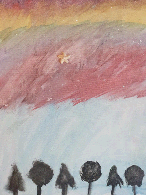 |
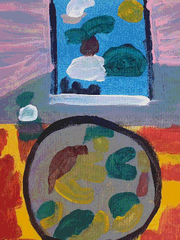 |
(a) Imagem Resultante da Esteganografia ( |
(b) Imagem Oculta Extraída ( |
-
Recuperação de Informação Oculta:
-
A operação de bitshift à esquerda (
<< 5) move os 3 bits menos significativos da imagem portadora para as posições mais significativas (MSB) da imagem final.
-
-
Qualidade e Perda de Resolução de Tonalidade:
-
Como a imagem oculta foi armazenada utilizando apenas 3 bits por canal de cor, a imagem recuperada possui no máximo 2^3 = 8 níveis de tonalidades por canal, o que gera uma pequena quantização visível (efeito de posterização/falso contorno), embora o conteúdo principal permaneça perfeitamente reconhecível.
-
10. Capítulo 11: Preenchimento de regiões
Clique para expandir os exercícios do Capítulo 11
=== Exercício 1: Limitação do Algoritmo de Rotulação
No programa labeling.cpp, o valor do contador de objetos é atribuído diretamente aos pixels da imagem em escala de cinza de 8 bits (CV_8UC1). Como essa estrutura suporta apenas valores no intervalo [0, 255], se a cena contiver mais de 255 objetos, o 256º objeto provocará um overflow de tipo, reiniciando o rótulo em 0. Isso faz com que objetos subsequentes sejam interpretados como fundo, corrompendo o processo de rotulação.
Para solucionar a limitação:
-
Converter a matriz de trabalho para uma profundidade de 16 ou 32 bits (
CV_32SC1), permitindo rotular até 2^{31}-1 objetos distintos. -
Utilizar a função
cv::connectedComponents(), que já lida nativamente com matrizes de rótulos de 32 bits inteiros.
=== Exercício 2: Contagem de Bolhas com e sem Buracos Internos
Aprimorar o algoritmo de contagem para:
-
Ignorar e remover todas as bolhas que tocam as bordas da imagem (sem pressupor se possuem ou não buracos).
-
Classificar e contar separadamente as bolhas que possuem um ou mais buracos internos e as que não possuem buracos.
labeling.cpp)#include <iostream>
#include <opencv2/opencv.hpp>
int main(int argc, char** argv) {
std::string filename = (argc > 1) ? argv[1] : "..\\bolhas.png";
cv::Mat image = cv::imread(filename, cv::IMREAD_GRAYSCALE);
if (image.empty()) {
std::cerr << "Erro ao carregar a imagem: " << filename << std::endl;
return -1;
}
int width = image.cols;
int height = image.rows;
// 1. Eliminar bolhas que tocam as bordas da imagem
for (int j = 0; j < width; j++) {
if (image.at<uchar>(0, j) == 255)
cv::floodFill(image, cv::Point(j, 0), 0);
if (image.at<uchar>(height - 1, j) == 255)
cv::floodFill(image, cv::Point(j, height - 1), 0);
}
for (int i = 0; i < height; i++) {
if (image.at<uchar>(i, 0) == 255)
cv::floodFill(image, cv::Point(0, i), 0);
if (image.at<uchar>(i, width - 1) == 255)
cv::floodFill(image, cv::Point(width - 1, i), 0);
}
// 2. Preencher o fundo externo com a cor 1 para isolar o fundo dos buracos (que continua 0)
cv::floodFill(image, cv::Point(0, 0), 1);
int bolhas_sem_buraco = 0;
int bolhas_com_buraco = 0;
// 3. Rotulação preliminar das bolhas
for (int i = 0; i < height; i++) {
for (int j = 0; j < width; j++) {
if (image.at<uchar>(i, j) == 255) {
cv::floodFill(image, cv::Point(j, i), 254);
}
}
}
// 4. Identificação dos buracos (pixels com tom 0)
for (int i = 0; i < height; i++) {
for (int j = 0; j < width; j++) {
if (image.at<uchar>(i, j) == 0) {
cv::floodFill(image, cv::Point(j, i), 253);
if (j > 0 && image.at<uchar>(i, j - 1) == 254) {
cv::floodFill(image, cv::Point(j - 1, i), 252);
} else if (i > 0 && image.at<uchar>(i - 1, j) == 254) {
cv::floodFill(image, cv::Point(j, i - 1), 252);
}
}
}
}
// 5. Contagem final das bolhas sem buraco (254) e com buraco (252)
for (int i = 0; i < height; i++) {
for (int j = 0; j < width; j++) {
uchar val = image.at<uchar>(i, j);
if (val == 254) {
bolhas_sem_buraco++;
cv::floodFill(image, cv::Point(j, i), 100);
} else if (val == 252) {
bolhas_com_buraco++;
cv::floodFill(image, cv::Point(j, i), 200);
}
}
}
std::cout << "--- Resultado do Processamento ---" << std::endl;
std::cout << "Total de bolhas validas: " << (bolhas_sem_buraco + bolhas_com_buraco) << std::endl;
std::cout << "Bolhas sem buracos: " << bolhas_sem_buraco << std::endl;
std::cout << "Bolhas com buracos: " << bolhas_com_buraco << std::endl;
cv::imwrite("resultado_labeling.png", image);
return 0;
}Saída gerada no terminal durante a execução do algoritmo:
--- Resultado do Processamento ---
Total de bolhas validas: 21
Bolhas sem buracos: 14
Bolhas com buracos: 7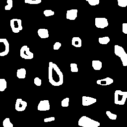 |
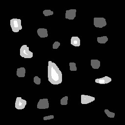 |
(a) Imagem Original ( |
(b) Resultado Final do Processamento |
-
Tratamento das Bordas:
-
A eliminação das bolhas nas bordas garante a precisão do algoritmo, pois objetos cortados pelas margens poderiam ter buracos ocultos fora da área visível do frame.
-
-
Separação de Fundos:
-
Alterar a cor do fundo de 0 para 1 permite distinguir o fundo geral dos buracos internos de forma precisa, já que qualquer pixel com valor 0 remanescente após o primeiro
floodFillpertence obrigatoriamente ao interior de uma bolha.
-
-
Análise Quantitativa:
-
Do conjunto total analisado na cena, 11 bolhas conectadas às bordas foram totalmente eliminadas sem contagem prévia.
-
Das 21 bolhas válidas restantes, o algoritmo classificou corretamente 14 bolhas sem buracos (preenchidas em tom de cinza intermediário) e 7 bolhas com buracos (preenchidas em tom de cinza mais claro).
-
11. Capítulo 11: Histogramas e Aplicações
Clique para expandir os exercícios do Capítulo 11
=== Exercício 1: Equalização de Histograma em Tempo Real (equalize.cpp)
Desenvolver um programa em C++ e OpenCV que capture frames continuamente a partir de uma fonte de vídeo ou câmera em escala de cinza e realize a equalização do histograma antes de exibir a imagem final. O objetivo é avaliar a redistribuição de luminância e o ganho de contraste em ambientes com iluminações variadas e desafiadoras (subexposição ou superexposição).
-
Capturar o frame da câmera/vídeo e convertê-lo para escala de cinza de 8 bits (
CV_8UC1) viacv::cvtColor(). -
Aplicar a equalização de histograma na matriz de tons de cinza utilizando a função
cv::equalizeHist(). -
Calcular e plotar lado a lado os histogramas das imagens Original e Equalizada (utilizando 64 bins) para permitir a comparação quantitativa do perfil de distribuição de intensidades.
equalize.cpp)#include <iostream>
#include <opencv2/opencv.hpp>
void drawHistogram(const cv::Mat& hist, cv::Mat& histImg, cv::Scalar color) {
histImg.setTo(cv::Scalar(0, 0, 0));
int nbins = hist.rows;
int histh = histImg.rows;
cv::Mat histNorm;
cv::normalize(hist, histNorm, 0, histh, cv::NORM_MINMAX, -1, cv::Mat());
for (int i = 0; i < nbins; i++) {
cv::line(histImg,
cv::Point(i, histh),
cv::Point(i, histh - cvRound(histNorm.at<float>(i))),
color, 1, 8, 0);
}
}
int main(int argc, char** argv) {
cv::VideoCapture cap;
if (argc > 1) {
cap.open(argv[1]);
} else {
cap.open(0, cv::CAP_DSHOW);
}
if (!cap.isOpened()) {
std::cerr << "Erro ao abrir a fonte de video/camera." << std::endl;
return -1;
}
cap.set(cv::CAP_PROP_FRAME_WIDTH, 640);
cap.set(cv::CAP_PROP_FRAME_HEIGHT, 480);
cv::Mat frame, gray, equalized;
cv::Mat histOriginal, histEqualized;
int nbins = 64;
float range[] = {0, 256};
const float* histrange = {range};
int histw = nbins;
int histh = nbins / 2;
cv::Mat histImgOrig(histh, histw, CV_8UC3, cv::Scalar(0, 0, 0));
cv::Mat histImgEq(histh, histw, CV_8UC3, cv::Scalar(0, 0, 0));
while (true) {
cap >> frame;
if (frame.empty()) break;
cv::cvtColor(frame, gray, cv::COLOR_BGR2GRAY);
cv::equalizeHist(gray, equalized);
cv::calcHist(&gray, 1, 0, cv::Mat(), histOriginal, 1, &nbins, &histrange, true, false);
cv::calcHist(&equalized, 1, 0, cv::Mat(), histEqualized, 1, &nbins, &histrange, true, false);
drawHistogram(histOriginal, histImgOrig, cv::Scalar(0, 255, 255));
drawHistogram(histEqualized, histImgEq, cv::Scalar(0, 255, 0));
cv::Mat displayOrig, displayEq;
cv::cvtColor(gray, displayOrig, cv::COLOR_GRAY2BGR);
cv::cvtColor(equalized, displayEq, cv::COLOR_GRAY2BGR);
histImgOrig.copyTo(displayOrig(cv::Rect(0, 0, histw, histh)));
histImgEq.copyTo(displayEq(cv::Rect(0, 0, histw, histh)));
cv::imshow("Original (Cinza)", displayOrig);
cv::imshow("Equalizada", displayEq);
if (cv::waitKey(30) == 27) break;
}
return 0;
}-
Redistribuição de Luminância (Ambiente Muito Iluminado): Em cenas superexpostas, onde a maioria dos pixels está concentrada na extremidade superior da escala de cinza (próximo de 255), a função de distribuição acumulada estica esses valores claros ao longo de todo o espectro [0, 255], forçando o reapeamento de parte das intensidades para tons médios e escuros.
-
Aumento do Contraste e Detalhes: A expansão da faixa dinâmica permite destacar sutis variações de textura e contornos em regiões claras que antes pareciam "estouradas" ou uniformemente brancas.
-
Artefatos e Ruído de Quantização: Como as intensidades originais estavam comprimidas num intervalo muito estreito de tons claros, o estiramento pode causar descontinuidades visíveis no histograma (comb-like histogram) e evidenciar ruídos em áreas de transição suave.
=== Exercício 2: Detector de Movimento Baseado em Histogramas (motiondetector.cpp)
Implementar um sistema de detecção de movimento em tempo real que calcule continuamente o histograma dos frames capturados e o compare com o histograma do frame imediatamente anterior. Quando a métrica de divergência ultrapassar um limiar preestabelecido, um alarme visual deve ser acionado na interface.
-
Calcular o histograma em escala de cinza para o frame atual e normalizá-lo para a faixa [0, 1].
-
Comparar o histograma atual com o histograma do frame anterior utilizando a métrica Chi-Quadrado (
cv::HISTCMP_CHISQR), via funçãocv::compareHist(). -
Caso a variação do histograma supere o limiar configurado (e.g., 50.0), desenhar um alerta visual (
ALARM: MOVIMENTO DETECTADO!) e uma moldura de sinalização sobre a imagem.
motiondetector.cpp)#include <iostream>
#include <opencv2/opencv.hpp>
int main(int argc, char** argv) {
cv::VideoCapture cap;
if (argc > 1) {
cap.open(argv[1]);
} else {
cap.open(0, cv::CAP_DSHOW);
}
if (!cap.isOpened()) {
std::cerr << "Erro ao abrir a fonte de video/camera." << std::endl;
return -1;
}
cap.set(cv::CAP_PROP_FRAME_WIDTH, 640);
cap.set(cv::CAP_PROP_FRAME_HEIGHT, 480);
cv::Mat frame, gray;
cv::Mat histAtual, histAnterior;
int nbins = 64;
float range[] = {0, 256};
const float* histrange = {range};
// Limiar de sensibilidade usando a metrica Chi-Quadrado
double threshold_chisqr = 50.0;
bool firstFrame = true;
while (true) {
cap >> frame;
if (frame.empty()) break;
cv::cvtColor(frame, gray, cv::COLOR_BGR2GRAY);
cv::calcHist(&gray, 1, 0, cv::Mat(), histAtual, 1, &nbins, &histrange, true, false);
cv::normalize(histAtual, histAtual, 0, 1, cv::NORM_MINMAX, -1, cv::Mat());
if (!firstFrame) {
// Comparacao de histogramas usando Chi-Quadrado
double diff = cv::compareHist(histAtual, histAnterior, cv::HISTCMP_CHISQR);
if (diff > threshold_chisqr) {
cv::putText(frame, "ALARM: MOVIMENTO DETECTADO!", cv::Point(20, 50),
cv::FONT_HERSHEY_SIMPLEX, 0.8, cv::Scalar(0, 0, 255), 2);
cv::rectangle(frame, cv::Point(0, 0), cv::Point(frame.cols - 1, frame.rows - 1),
cv::Scalar(0, 0, 255), 5);
}
std::cout << "Diferenca de Histograma (Chi-Sqr): " << diff << std::endl;
} else {
firstFrame = false;
}
histAtual.clone().copyTo(histAnterior);
cv::imshow("Detector de Movimento", frame);
if (cv::waitKey(30) == 27) break;
}
return 0;
}-
Escolha da Métrica: A distância Chi-Quadrado (
cv::HISTCMP_CHISQR) mostrou-se bastante adequada para a detecção de movimento, pois atribui um peso significativamente maior a mudanças na distribuição de valores de pixels entre quadros consecutivos. -
Robustez a Pequenas Oscilações: Ajustar o limiar para um valor adequado (como 50.0) evita que pequenas oscilações de iluminação global ou ruídos do sensor da câmera disparem falsos positivos.
-
Desempenho: Por comparar distribuições globais de 64 bins em vez de realizar operações pixel a pixel, a abordagem baseada em histograma consome pouquíssimo recurso computacional, sendo ideal para sistemas embarcados e monitoramento leve.
12. Capítulo 13: Transformações Geométricas e Correção de Perspectiva
Clique para expandir os exercícios do Capítulo 13
=== Exercício 1: Correção Interativa de Perspectiva (registro.cpp)
Modificar o programa registro.cpp para permitir que o usuário defina interativamente, por meio de cliques do mouse na interface gráfica, os quatro pontos de canto de uma região de interesse retangular em perspectiva. O programa deve calcular a matriz de transformação homográfica correspondente e aplicar o retifamento ortogonal sobre a imagem (voltimetro.png).
-
Registrar uma função callback de evento do mouse via
cv::setMouseCallback()para armazenar as coordenadas bidimensionais dos cliques do usuário em ordem cronológica (superior-esquerdo, superior-direito, inferior-direito, inferior-esquerdo). -
Desenhar marcações visuais (círculos e numeração) na tela a cada clique para guiar a interação.
-
Após a seleção dos 4 pontos, estimar a largura e altura máximas do quadrilátero selecionado com a norma euclidiana (
cv::norm()), mapeando-os para uma matriz de destino plana [0, largura] X [0, altura]. -
Obter a matriz de transformação de perspectiva com
cv::getPerspectiveTransform()e projetar a imagem corrigida utilizando a funçãocv::warpPerspective().
registro.cpp)#include <iostream>
#include <vector>
#include <opencv2/opencv.hpp>
struct MouseData {
cv::Mat imgOriginal;
cv::Mat imgDisplay;
std::vector<cv::Point2f> srcPoints;
};
void onMouse(int event, int x, int y, int flags, void* userdata) {
MouseData* data = reinterpret_cast<MouseData*>(userdata);
if (event == cv::EVENT_LBUTTONDOWN) {
if (data->srcPoints.size() < 4) {
cv::Point2f pt(x, y);
data->srcPoints.push_back(pt);
std::cout << "Ponto " << data->srcPoints.size() << " selecionado: (" << x << ", " << y << ")" << std::endl;
cv::circle(data->imgDisplay, pt, 5, cv::Scalar(0, 0, 255), -1);
cv::putText(data->imgDisplay, std::to_string(data->srcPoints.size()),
cv::Point(x + 8, y + 8), cv::FONT_HERSHEY_SIMPLEX, 0.6,
cv::Scalar(0, 255, 0), 2);
cv::imshow("Selecione 4 Pontos", data->imgDisplay);
if (data->srcPoints.size() == 4) {
float largura = cv::max(
cv::norm(data->srcPoints[0] - data->srcPoints[1]),
cv::norm(data->srcPoints[2] - data->srcPoints[3])
);
float altura = cv::max(
cv::norm(data->srcPoints[1] - data->srcPoints[2]),
cv::norm(data->srcPoints[3] - data->srcPoints[0])
);
std::cout << "\nDimensoes calculadas:" << std::endl;
std::cout << "Largura: " << largura << " px" << std::endl;
std::cout << "Altura: " << altura << " px" << std::endl;
std::vector<cv::Point2f> dstPoints;
dstPoints.push_back(cv::Point2f(0, 0));
dstPoints.push_back(cv::Point2f(largura, 0));
dstPoints.push_back(cv::Point2f(largura, altura));
dstPoints.push_back(cv::Point2f(0, altura));
cv::Mat perspectiveMatrix = cv::getPerspectiveTransform(data->srcPoints, dstPoints);
cv::Mat correctedImage;
cv::warpPerspective(data->imgOriginal, correctedImage, perspectiveMatrix, cv::Size(largura, altura));
cv::imshow("Imagem Corrigida", correctedImage);
}
}
}
}
int main(int argc, char** argv) {
std::string filename = (argc > 1) ? argv[1] : "voltimetro.png";
MouseData data;
data.imgOriginal = cv::imread(filename);
if (data.imgOriginal.empty()) {
std::cerr << "Erro ao carregar a imagem: " << filename << std::endl;
return -1;
}
data.imgDisplay = data.imgOriginal.clone();
std::cout << "--- Instrucoes ---" << std::endl;
std::cout << "1. Clique com o BOTAO ESQUERDO do mouse para selecionar 4 pontos na ordem:" << std::endl;
std::cout << " [1] Superior Esquerdo -> [2] Superior Direito -> [3] Inferior Direito -> [4] Inferior Esquerdo" << std::endl;
std::cout << "2. Pressione 'r' para resetar os pontos." << std::endl;
std::cout << "3. Pressione 'ESC' ou 'q' para sair." << std::endl;
cv::namedWindow("Selecione 4 Pontos");
cv::setMouseCallback("Selecione 4 Pontos", onMouse, &data);
cv::imshow("Selecione 4 Pontos", data.imgDisplay);
while (true) {
int key = cv::waitKey(30);
if (key == 27 || key == 'q' || key == 'Q') {
break;
} else if (key == 'r' || key == 'R') {
data.srcPoints.clear();
data.imgDisplay = data.imgOriginal.clone();
cv::imshow("Selecione 4 Pontos", data.imgDisplay);
cv::destroyWindow("Imagem Corrigida");
std::cout << "\nPontos resetados. Selecione 4 novos pontos." << std::endl;
}
}
return 0;
}Durante os testes interativos com a imagem do voltímetro (voltimetro.png), foram selecionados os seguintes vértices limitantes do mostrador:
-
Ponto 1 (Superior Esquerdo): (54, 81)
-
Ponto 2 (Superior Direito): (360, 58)
-
Ponto 3 (Inferior Direito): (354, 210)
-
Ponto 4 (Inferior Esquerdo): (46, 246)
A partir desses vértices, a norma euclidiana calculou a escala proporcional da região para a projeção plana:
-
Largura Calculada: 310.097 px
-
Altura Calculada: 165.194 px
As figuras abaixo ilustram a imagem original com os 4 pontos selecionados interativamente pelo usuário e a imagem final resultante do processo de retificação homográfica:


A matriz de transformação estimada por cv::getPerspectiveTransform() permitiu retificar com precisão o ângulo de visão inclinado do painel do voltímetro. O resultado gerou uma visão frontal ortogonal perfeita do mostrador digital, eliminando as distorções trapezoidais causadas pela perspectiva original da foto.
13. Capítulo 14: Filtragem no Domínio do Espaço I
Clique para expandir os exercícios do Capítulo 14
=== Exercício 1: Variação do Tamanho da Máscara no Filtro da Média (convolucao2.cpp)
Com base no programa convolucao.cpp, implementar o programa convolucao2.cpp para realizar o mascaramento e a filtragem no domínio do espaço utilizando o filtro da média com máscaras quadradas de dimensões 11 X 11 e 21 X 21 pixels. O objetivo é comparar analiticamente e visualmente os resultados obtidos em relação ao filtro padrão de tamanho 3 X 3 pixels.
-
Implementar uma estrutura interativa que permita alternar dinamicamente as dimensões da máscara do filtro da média (3 X 3, 11 X 11 e 21 X 21) durante a captura contínua de frames.
-
Construir a matriz kernel de ponto flutuante K_{N X N} cujos elementos valem 1 / N^2, garantindo o ganho unitário e a preservação do brilho médio da imagem.
-
Executar a convolução espacial via
cv::filter2D()sobre a imagem em escala de cinza e analisar a atenuação de frequências espaciais elevadas em função do aumento da janela do kernel.
convolucao2.cpp)#include <iostream>
#include <opencv2/opencv.hpp>
void printMenu() {
std::cout << "\n=== MENU FILTRO DA MEDIA ===" << std::endl;
std::cout << "Teclas disponiveis para alterar a mascara:" << std::endl;
std::cout << "1 - Mascara da Media 3x3" << std::endl;
std::cout << "2 - Mascara da Media 11x11" << std::endl;
std::cout << "3 - Mascara da Media 21x21" << std::endl;
std::cout << "ESC - Sair" << std::endl;
}
int main(int argc, char** argv) {
cv::VideoCapture cap;
if (argc > 1) {
cap.open(argv[1]);
} else {
cap.open(0, cv::CAP_DSHOW);
}
if (!cap.isOpened()) {
std::cerr << "Erro ao abrir a camera ou ficheiro de video." << std::endl;
return -1;
}
cap.set(cv::CAP_PROP_FRAME_WIDTH, 640);
cap.set(cv::CAP_PROP_FRAME_HEIGHT, 480);
cv::Mat frame, gray, result;
int maskSize = 3;
printMenu();
while (true) {
cap >> frame;
if (frame.empty()) break;
cv::cvtColor(frame, gray, cv::COLOR_BGR2GRAY);
cv::Mat mask = cv::Mat::ones(maskSize, maskSize, CV_32F) / (float)(maskSize * maskSize);
cv::filter2D(gray, result, CV_32F, mask);
result.convertTo(result, CV_8U);
std::string text = "Filtro da Media: " + std::to_string(maskSize) + "x" + std::to_string(maskSize);
cv::putText(result, text, cv::Point(20, 30), cv::FONT_HERSHEY_SIMPLEX, 0.7, cv::Scalar(255), 2);
cv::imshow("Original (Cinza)", gray);
cv::imshow("Filtrada (Convolucao)", result);
char key = (char)cv::waitKey(30);
if (key == 27) break;
switch (key) {
case '1':
maskSize = 3;
std::cout << "Mascara alterada para 3x3" << std::endl;
break;
case '2':
maskSize = 11;
std::cout << "Mascara alterada para 11x11" << std::endl;
break;
case '3':
maskSize = 21;
std::cout << "Mascara alterada para 21x21" << std::endl;
break;
default:
break;
}
}
return 0;
}O filtro da média atua como um filtro passa-baixas no domínio da frequência espacial. À medida que o tamanho da máscara N X N aumenta, amplia-se a região de vizinhança integrada para a média local de cada pixel:
-
Mascara 3 X 3: Remove ruídos de alta frequência pontuais (como ruído sal e pimenta) mantendo a nitidez geral e contornos bem definidos.
-
Mascara 11 X 11: Produz um efeito de borramento (blurring) acentuado, eliminando detalhes finos e suavizando bordas proeminentes.
-
Mascara 21 X 21: Provoca forte desfoque na cena, transformando objetos pequenos em borrões homogêneos e espalhando a transição de intensidade ao longo de grandes extensões de pixels.
=== Exercício 2: Correção de Profundidade de Campo com Filtro Laplaciano (depthoffield.cpp)
O efeito de profundidade de campo faz com que apenas objetos em determinado plano focal permaneçam nítidos em uma cena, deixando regiões anteriores ou posteriores desfocadas. O objetivo é implementar o programa depthoffield.cpp para processar uma sequência de vídeo (e.g., vasos720p.mp4) com variação de foco e reconstruir uma única imagem final colorida com foco estendido (onde todos os objetos fiquem focados simultaneamente).
-
Iterar quadro a quadro sobre a sequência de vídeo e converter cada frame colorido para escala de cinza.
-
Aplicar um filtro diferencial Laplaciano 3 X 3 (derivada de segunda ordem) sobre o frame em escala de cinza para medir a taxa de variação de alta frequência (nitidez e riqueza de bordas).
-
Manter e atualizar continuamente uma matriz acumuladora com os maiores valores do módulo Laplaciano observados pixel a pixel ao longo do vídeo.
-
Sempre que o valor Laplaciano do pixel atual for estritamente superior ao valor contido na matriz de máximos, substituir o pixel da imagem de saída pelo pixel colorido BGR do frame correspondente.
depthoffield.cpp)#include <iostream>
#include <opencv2/opencv.hpp>
int main(int argc, char** argv) {
std::string videoPath = (argc > 1) ? argv[1] : "vasos720p.mp4";
cv::VideoCapture cap(videoPath);
if (!cap.isOpened()) {
std::cerr << "Erro ao abrir o video: " << videoPath << std::endl;
return -1;
}
cv::Mat frame, gray, laplacian, laplacianAbs, laplacianDisplay;
cv::Mat maxLaplacian;
cv::Mat focusImage;
float laplacianMask[3][3] = {
{-1, -1, -1},
{-1, 8, -1},
{-1, -1, -1}
};
cv::Mat mask = cv::Mat(3, 3, CV_32F, laplacianMask);
bool initialized = false;
int frameCount = 0;
std::cout << "Processando frames do video..." << std::endl;
while (true) {
cap >> frame;
if (frame.empty()) break;
frameCount++;
cv::cvtColor(frame, gray, cv::COLOR_BGR2GRAY);
cv::filter2D(gray, laplacian, CV_32F, mask);
laplacianAbs = cv::abs(laplacian);
if (!initialized) {
maxLaplacian = laplacianAbs.clone();
focusImage = frame.clone();
initialized = true;
continue;
}
for (int r = 0; r < frame.rows; r++) {
for (int c = 0; c < frame.cols; c++) {
float currentVal = laplacianAbs.at<float>(r, c);
float maxVal = maxLaplacian.at<float>(r, c);
if (currentVal > maxVal) {
maxLaplacian.at<float>(r, c) = currentVal;
focusImage.at<cv::Vec3b>(r, c) = frame.at<cv::Vec3b>(r, c);
}
}
}
cv::normalize(laplacianAbs, laplacianDisplay, 0, 255, cv::NORM_MINMAX, CV_8U);
cv::imshow("Frame Original do Video", frame);
cv::imshow("Imagem em Tons de Cinza", gray);
cv::imshow("Resposta Laplaciana (Frame Atual)", laplacianDisplay);
cv::imshow("Foco Estendido (Saida Final Colorida)", focusImage);
if (cv::waitKey(1) == 27) break;
}
std::cout << "Processamento concluido (" << frameCount << " frames analisados)." << std::endl;
cv::Mat maxLaplacianDisplay;
cv::normalize(maxLaplacian, maxLaplacianDisplay, 0, 255, cv::NORM_MINMAX, CV_8U);
cv::imwrite("resultado_foco_estendido.png", focusImage);
cv::imwrite("resultado_laplaciano_maximo.png", maxLaplacianDisplay);
cv::imshow("Mapa Acumulado de Laplacianos Maximos", maxLaplacianDisplay);
cv::imshow("Foco Estendido (Saida Final Colorida)", focusImage);
cv::waitKey(0);
return 0;
}Como o operador Laplaciano é um filtro derivativo de segunda ordem, ele responde com altas amplitudes nas transições abruptas de intensidade (bordas e detalhes finos), que correspondem exatamente às regiões focadas de um frame.
-
O mapa acumulado de máximos do Laplaciano (
resultado_laplaciano_maximo.png) funciona como um mapa de relevo da nitidez da cena, destacando em tom claro os pixels onde o foco atingiu o valor ideal ao longo da gravação. -
A imagem colorida composta (
resultado_foco_estendido.png) consolida as melhores porções de cada frame, eliminando o efeito de variação de profundidade de campo e entregando uma cena uniformemente focada em todos os planos do espaço.
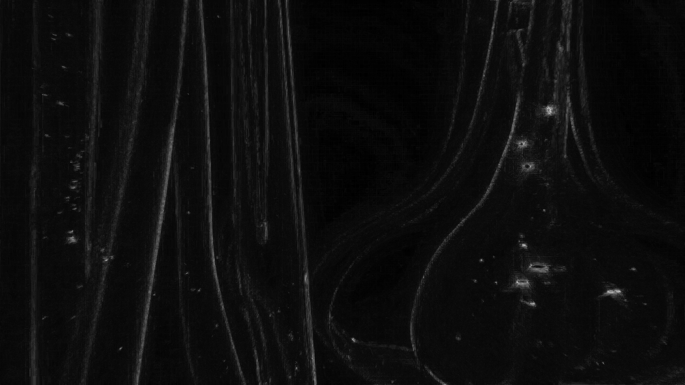 Figure 3. Mapa de Máximos Laplacianos
|
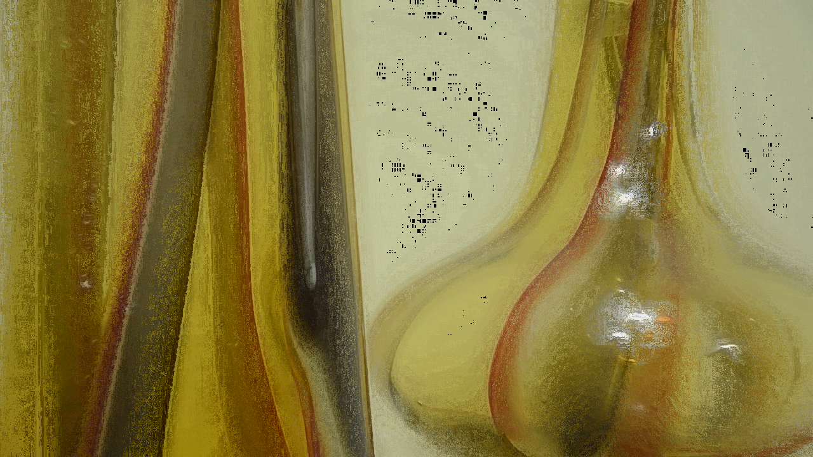 Figure 4. Resultado Final de Foco Estendido
|
14. Capítulo 15: Filtragem no Domínio do Espaço II (Efeito Tilt-Shift)
Clique para expandir os exercícios do Capítulo 15
=== Exercício 1: Tilt-Shift em Imagem Estática (tiltshift.cpp)
Implementar o programa tiltshift.cpp para simular o efeito de miniaturização (tilt-shift) em uma imagem estática. A interface deve fornecer três barras de ajuste (trackbars) para regulagem interativa dos seguintes parâmetros:
* Altura da região central em foco (h);
* Força de decaimento da transição borrada (delta);
* Posição vertical do centro da região em foco (y_0).
Ao finalizar os ajustes, a imagem gerada com o efeito aplicado deve ser salva em disco.
-
Gerar uma versão borrada da imagem de entrada utilizando um filtro Gaussiano (
cv::GaussianBlur()). -
Criar uma máscara de ponderação $a(x)$ baseada na diferença entre duas funções de tangente hiperbólica (sigmóide):
\[a(x) = \frac{1}{2} \left[ \tanh\left(\frac{x - y_0 + h/2}{\delta}\right) - \tanh\left(\frac{x - y_0 - h/2}{\delta}\right) \right]\] -
Realizar a mistura ponderada (blending) pixel a pixel entre a imagem original \(I_{orig}\) e a imagem borrada \(I_{blur}\) conforme a equação:
\[I_{res} = a \cdot I_{orig} + (1 - a) \cdot I_{blur}\] -
Atualizar a imagem exibida dinamicamente a cada alteração nas trackbars e salvar o resultado final em arquivo (
tiltshift_resultado.png).
tiltshift.cpp)#include <iostream>
#include <cmath>
#include <opencv2/opencv.hpp>
int height_slider = 20;
int height_slider_max = 100;
int decay_slider = 10;
int decay_slider_max = 100;
int pos_slider = 50;
int pos_slider_max = 100;
cv::Mat imageOriginal, imageBlurred, imageResult;
void processTiltShift() {
int rows = imageOriginal.rows;
int cols = imageOriginal.cols;
double h = (height_slider / (double)height_slider_max) * rows;
double y0 = (pos_slider / (double)pos_slider_max) * rows;
double delta = decay_slider + 1.0;
cv::Mat alpha = cv::Mat::zeros(rows, cols, CV_32FC3);
for (int r = 0; r < rows; r++) {
double val = 0.5 * (std::tanh((r - y0 + h / 2.0) / delta) - std::tanh((r - y0 - h / 2.0) / delta));
for (int c = 0; c < cols; c++) {
alpha.at<cv::Vec3f>(r, c) = cv::Vec3f(val, val, val);
}
}
cv::Mat imgOrigFloat, imgBlurFloat, resultFloat;
imageOriginal.convertTo(imgOrigFloat, CV_32FC3);
imageBlurred.convertTo(imgBlurFloat, CV_32FC3);
cv::Mat alphaInverse = cv::Scalar(1.0, 1.0, 1.0) - alpha;
resultFloat = imgOrigFloat.mul(alpha) + imgBlurFloat.mul(alphaInverse);
resultFloat.convertTo(imageResult, CV_8UC3);
cv::imshow("Efeito Tilt-Shift", imageResult);
}
void on_trackbar(int, void*) {
processTiltShift();
}
int main(int argc, char** argv) {
std::string filename = (argc > 1) ? argv[1] : "por-do-sol-ponta-negra.png";
imageOriginal = cv::imread(filename);
if (imageOriginal.empty()) {
std::cerr << "Erro ao abrir a imagem: " << filename << std::endl;
return -1;
}
cv::GaussianBlur(imageOriginal, imageBlurred, cv::Size(21, 21), 0);
cv::namedWindow("Efeito Tilt-Shift", cv::WINDOW_NORMAL);
cv::resizeWindow("Efeito Tilt-Shift", 800, 600);
cv::createTrackbar("Altura Foco (h)", "Efeito Tilt-Shift", &height_slider, height_slider_max, on_trackbar);
cv::createTrackbar("Decaimento (delta)", "Efeito Tilt-Shift", &decay_slider, decay_slider_max, on_trackbar);
cv::createTrackbar("Posicao Vert (y0)", "Efeito Tilt-Shift", &pos_slider, pos_slider_max, on_trackbar);
processTiltShift();
while (true) {
char k = (char)cv::waitKey(30);
if (k == 27) break;
if (k == 's' || k == 'S') {
cv::imwrite("tiltshift_resultado.png", imageResult);
std::cout << "Imagem salva como 'tiltshift_resultado.png'!" << std::endl;
}
}
cv::imwrite("tiltshift_resultado.png", imageResult);
return 0;
}A aplicação da máscara sigmóide permite uma transição suave entre a região nitidamente focada na faixa central e o desfoque progressivo nas extremidades superior e inferior. Esse efeito simula a ilusão de uma profundidade de campo extremamente reduzida, típica de fotografias macro de maquetes e miniaturas.

Figure 5. Imagem Original (
por-do-sol-ponta-negra.png) |

Figure 6. Resultado Com Efeito Tilt-Shift (
tiltshift_resultado.png) |
=== Exercício 2: Tilt-Shift em Vídeo com Efeito Stop Motion (tiltshiftvideo.cpp)
Implementar o programa tiltshiftvideo.cpp capaz de processar um arquivo de vídeo (e.g., Natal.mp4), aplicar o efeito de tilt-shift em cada um dos quadros e gravar o resultado final em um arquivo de vídeo de saída. Para simular a estética de maquetes em movimento, deve-se aplicar o descarte controlado de quadros, gerando o efeito de stop motion.
-
Carregar o vídeo de entrada utilizando a classe
cv::VideoCapturee configurar o renderizadorcv::VideoWritercom o codec de compressão adequado. -
Criar uma rotina otimizada de cálculo de máscara de peso $a(x)$, pré-calculando o vetor unidimensional das linhas para acelerar o processamento em tempo real do fluxo de vídeo.
-
Estabelecer um fator de amostragem temporal (descarte de quadros $N$), processando apenas 1 a cada $N$ quadros capturados e duplicando-os na gravação para preservar a taxa de atualização (FPS) mantendo o aspecto travado característico de animações em stop motion.
-
Gravar o vídeo processado no arquivo de saída (
tiltshift_stopmotion.mp4).
tiltshiftvideo.cpp)#include <iostream>
#include <cmath>
#include <string>
#include <opencv2/opencv.hpp>
cv::Mat applyTiltShift(const cv::Mat &frameOrig, double h_ratio, double delta_val, double y0_ratio) {
int rows = frameOrig.rows;
int cols = frameOrig.cols;
double h = h_ratio * rows;
double y0 = y0_ratio * rows;
double delta = delta_val;
cv::Mat frameBlurred;
cv::GaussianBlur(frameOrig, frameBlurred, cv::Size(21, 21), 0);
cv::Mat alpha1D(rows, 1, CV_32F);
for (int r = 0; r < rows; r++) {
alpha1D.at<float>(r, 0) = 0.5f * (std::tanh((r - y0 + h / 2.0) / delta) - std::tanh((r - y0 - h / 2.0) / delta));
}
cv::Mat alpha2D;
cv::repeat(alpha1D, 1, cols, alpha2D);
cv::Mat alpha;
cv::Mat channels[] = {alpha2D, alpha2D, alpha2D};
cv::merge(channels, 3, alpha);
cv::Mat origFloat, blurFloat, resultFloat, resultByte;
frameOrig.convertTo(origFloat, CV_32FC3);
frameBlurred.convertTo(blurFloat, CV_32FC3);
cv::Mat alphaInverse = cv::Scalar(1.0, 1.0, 1.0) - alpha;
resultFloat = origFloat.mul(alpha) + blurFloat.mul(alphaInverse);
resultFloat.convertTo(resultByte, CV_8UC3);
return resultByte;
}
int main(int argc, char** argv) {
std::string inputVideo = (argc > 1) ? argv[1] : "Natal.mp4";
std::string outputVideo = "tiltshift_stopmotion.mp4";
double h_ratio = 0.30;
double delta_val = 12.0;
double y0_ratio = 0.50;
int frameSkip = 3;
cv::VideoCapture cap(inputVideo);
if (!cap.isOpened()) {
std::cerr << "Erro ao abrir o video: " << inputVideo << std::endl;
return -1;
}
int width = static_cast<int>(cap.get(cv::CAP_PROP_FRAME_WIDTH));
int height = static_cast<int>(cap.get(cv::CAP_PROP_FRAME_HEIGHT));
double origFps = cap.get(cv::CAP_PROP_FPS);
int fourcc = cv::VideoWriter::fourcc('m', 'p', '4', 'v');
cv::VideoWriter writer(outputVideo, fourcc, origFps, cv::Size(width, height));
cv::Mat frame, processedFrame;
int frameCount = 0;
while (true) {
cap >> frame;
if (frame.empty()) break;
if (frameCount % frameSkip == 0) {
processedFrame = applyTiltShift(frame, h_ratio, delta_val, y0_ratio);
for (int i = 0; i < frameSkip; i++) {
writer.write(processedFrame);
}
}
frameCount++;
}
cap.release();
writer.release();
return 0;
}O descarte periódico de quadros (frameSkip = 3) associado à preservação da velocidade de reprodução altera a percepção do movimento contínuo da cena real, aproximando-se da fluidez de modelos reduzidos e maquetes animadas manualmente. A aplicação sequencial do filtro de tilt-shift em cada frame reforça o isolamento óptico do elemento de interesse no plano focal central durante a execução do vídeo.
tiltshift_stopmotion.mp4)